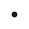
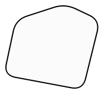
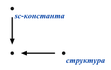
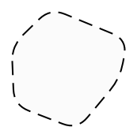
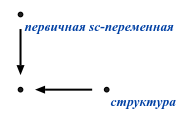
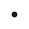
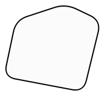
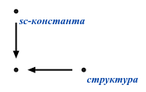
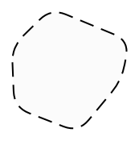
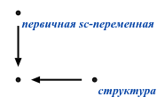

Представление изображаемых sc-элементов в SC-коде






| Расширение алфавита sc.g-элементов | Синтаксический тип sc.g-элемента | Представление изображаемых sc-элементов в SC-коде |
|---|---|---|
| sc.g-шина |

| |

| константный sc.g-контур |

|

| первопеременный sc.g-контур |

|
| sc.g-рамка |
| |
| sc.g-узел |